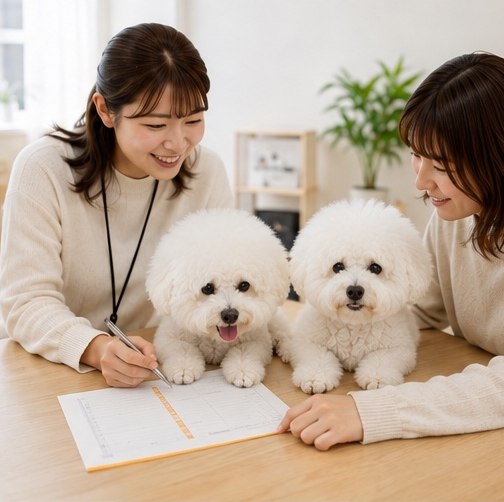

Guide
ご利用案内
「まずは話を聞いてみたい」という方も歓迎です。ご自身のペースで一歩ずつ進められます。
ご利用いただける方
障がいや難病などがあり、一般企業で働くことに不安を感じているものの、雇用契約に基づく就労が可能な方を対象とするサービスです。
利用できる条件は年齢やお住まいの地域、個人の状況などにより異なります。自治体または当事業所へご確認ください。
必要となる手続き
障害福祉サービス受給者証の申請などが必要になる場合があります。必要書類や利用料についても個別に異なるため、詳しくご案内します。

Visit & trial
見学・体験について
仕事の内容や事業所の雰囲気を知っていただくため、見学や体験を受け付けています。ご家族や支援者の方との参加もご相談ください。
Flow
利用開始までの流れ
お問い合わせ
見学
体験
面談
市区町村への申請
雇用契約
利用開始
順序や必要な手続きは状況により異なる場合があります。詳しくはお問い合わせください。
FAQ
よくあるご質問
短時間からの勤務もご相談いただけます。詳細はお問い合わせください。
ペット同伴についてご相談いただけます。犬種や受け入れ条件などの詳細はお問い合わせください。
はい。現在の体調やご経験を伺い、無理のない作業から一緒に考えます。
パソコン以外の作業もあります。得意なことに合わせてご相談ください。
はい。まずは事業所の雰囲気をご覧ください。
山科駅周辺からの送迎についてご相談いただけます。詳細はお問い合わせください。
車・自転車・バイクでの通所についてご相談いただけます。詳細はお問い合わせください。